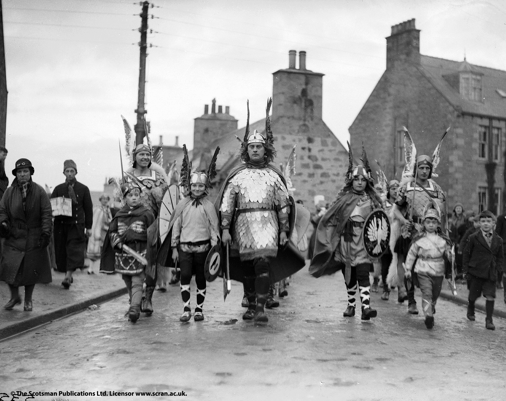
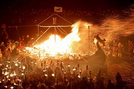
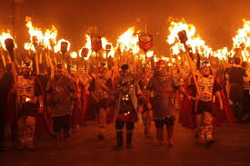
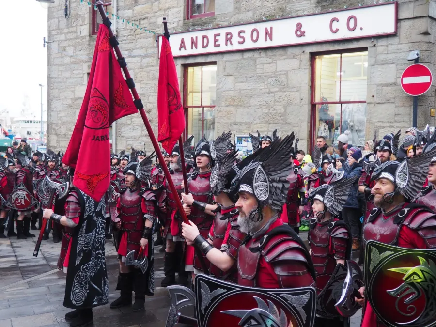
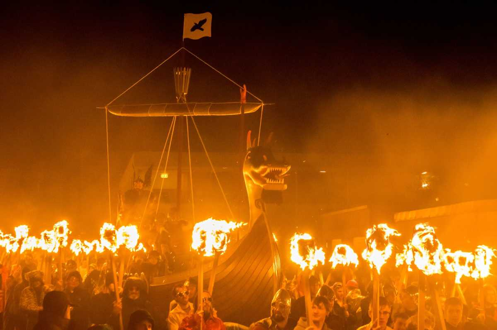
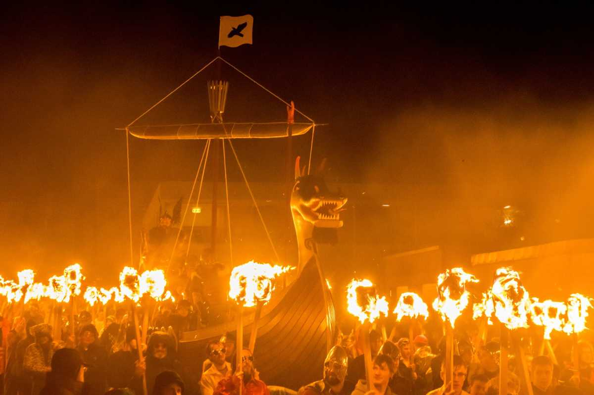

¿Qué es?
Cada año, entre enero y marzo, tienen lugar varios festivales del fuego en distintos puntos de las islas Shetland. El origen de estas celebraciones se remonta a finales del siglo XIX, cuando se celebró el primer Up Helly Aa en Lerwick, aunque existen 11 festivales diferentes en las islas, en los que se implica prácticamente toda la comunidad.
El Up Helly Aa de Lerwick se celebra cada año el último martes de enero y reúne a los habitantes de las islas. Es uno de los festivales más auténticos de Escocia y uno de los más locales.
Origen del festival
El nombre de Up Helly Aa deriva de Upholiday, una palabra escocesa de las Lowlands que se utilizaba para denominar el Día de Reyes.
La celebración del Up Helly Aa tiene su origen en una tradición antigua que se celebraba en las Shetland y en muchas comunidades germánicas para marcar el fin del Yule (el equivalente pagano a la Navidad cristiana).
Así, en 1876 tuvo lugar la primera procesión de antorchas en las Shetland, aunque no fue hasta el año 1881 cuando se celebró el primer Up Helly Aa. A partir de entonces, la celebración se fue institucionalizando y en 1889 se quemó por primera vez una galera tras el desfile de antorchas.
Ni la lluvia, el viento o incluso la nieve que asolan las Shetland en invierno han provocado nunca que el evento se cancele, pero sí ha tenido que ser pospuesto algunas veces: en 1900 se aplazó 2 semanas debido a una epidemia de gripe, en 1936 debido a la muerte del rey Jorge V y en 1965 por la muerte de Winston Churchill.
El Up Helly Aa sólo se ha dejado de celebrar en 4 ocasiones: en 1901 tras la muerte de la Reina Victoria, durante la I y la II Guerra Mundial y en 2021 y 2022 debido a la pandemia de Covid-19.
The Galley
El desfile del Up Helly Aa de Lerwick termina con la quema de un barco vikingo, conocido como The Galley. En los primeros años del Up Helly Aa, se utilizaron estructuras de madera cubiertas por una tela o barcos viejos que ya no podían navegar. Quemándolos, estos barcos eran enviados al Valhalla.
Después de la Primera Guerra Mundial, los constructores de barcos que trabajaban en los muelles de Lerwick fueron contratados para fabricar las nuevas galeras. Eran conocidos como los “Dock boys” (los chicos del muelle), y fueron los encargados de fabricar los galleys para el Up Helly Aa hasta la Segunda Guerra Mundial.
Desde 1949, todos los barcos siguen el modelo diseñado por el constructor de barcos James Smith, miembro del Comité del Up Helly Aa durante más de 20 años.
En la actualidad, los constructores del barco son voluntarios locales, que trabajan durante casi 4 meses para tener listo the galley el último martes de enero. El color de la galera cambia cada año, a elección del Jarl, y es el mismo color que vestirá su escuadrón. El diseño del barco se mantiene en secreto hasta el mismo día del Up Helly Aa.
El desfile de antorchas
El punto fuerte del Up Helly Aa empieza sobre las 19.15, cuando el Jarl y el escuadrón principal avanzan desde la parte trasera de la procesión hasta la primera fila para iniciar el desfile.
El desfile dura aproximadamente 2 horas, durante las cuales los participantes, agrupados en squads, recorren varias calles portando las antorchas y cantando las canciones del Up Helly Aa. Sólo los miembros del primer squad, los guizers, comandados por su Jarl, van vestidos de vikingos. El resto de participantes van disfrazados de manera variopinta.
Durante el desfile, podrás ver cómo los guizers llevan el barco vikingo (the galley), capitaneado por el Jarl y lo depositan en el centro de King George’s Field. Hasta allí llegan todos los participantes del desfile, que rodean el barco, con las antorchas en alto, a cámara lenta.
Otro cohete explota en lo alto y el Jarl abandona el barco justo antes de que los guizers comiencen a lanzar sus antorchas al ritmo de The Galley Song.
Cuando el barco termina de arder, los guizers cantan al unísono el requiem nórdico The Norseman’s home. Desde lejos, los asistentes al desfile escuchamos el requiem y observamos cómo el fuego destruye cuatro meses de trabajo, quedando el barco reducido a cenizas.
Qué hacer
A las 19.30 horas del último martes de enero se celebra cada año el desfile de antorchas que pone el broche de oro a las festividades del Up Helly Aa de Lerwick.
Pero desde primera hora de la mañana la ciudad se prepara para este momento. Es un día ajetreado para los habitantes de Lerwick, los escaparates de las tiendas llevan días decorados, el squad de guizers no tiene un minuto libre en todo el día…
A las 8.15 de la mañana el escuadrón, capitaneado por su Jarl, comienza a recorrer los principales puntos de la ciudad.
Commercial Road, Esplanade, Market Cross, Fort Charlotte, el Ayuntamiento o la Terminal de Ferry de Bressay son algunos de los lugares en los que podrás cruzarte con los squads durante el día. También visitan escuelas y el hospital de Lerwick.
Sobre las 15.00, el escuadrón visita el Museo de las Shetland, uno de los lugares imprescindibles que visitar en Lerwick para conocer la historia de las islas y sus tradiciones. Si te cuadra, aprovecha para visitar el museo a esa hora, ya que así podrás coincidir con su visita. En cualquier caso, seguro que te cruzas con ellos en algún punto de la ciudad.
A las 17.30 comienza el desfile juvenil, y es que los niños de Lerwick también pueden participar en este evento tan importante para ellos. Su pequeña procesión, guiada por el Junior Jarl, termina también con la quema de un barco, la galera Peerie; y en todo momento son animados por el Guizer Jarl y su escuadrón.
Sobre las 18.00, the galley, el barco vikingo que hasta entonces ha estado descansando en la terminal de ferry de Bressay, es transportado hasta Hillhead, junto al ayuntamiento, para comenzar la procesión.
Galeria
   

 
